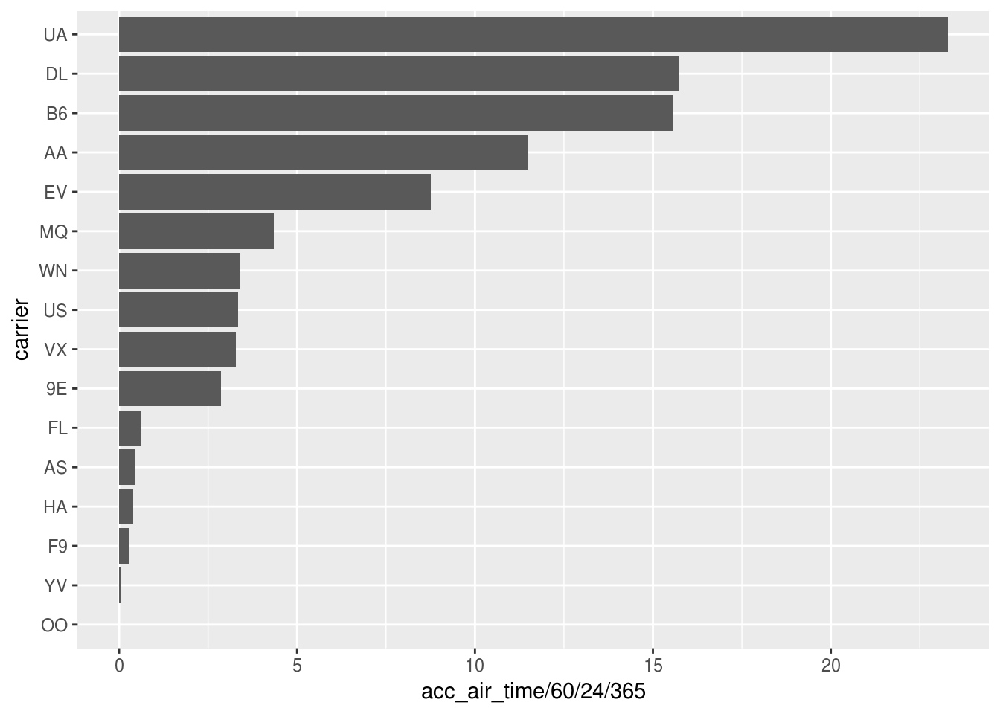
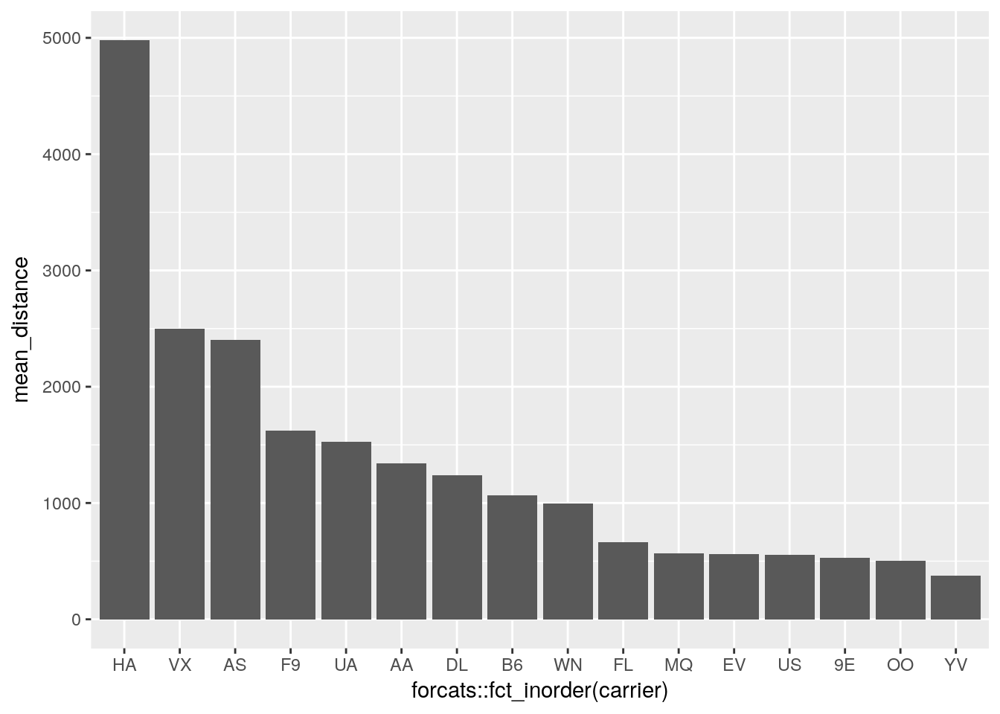
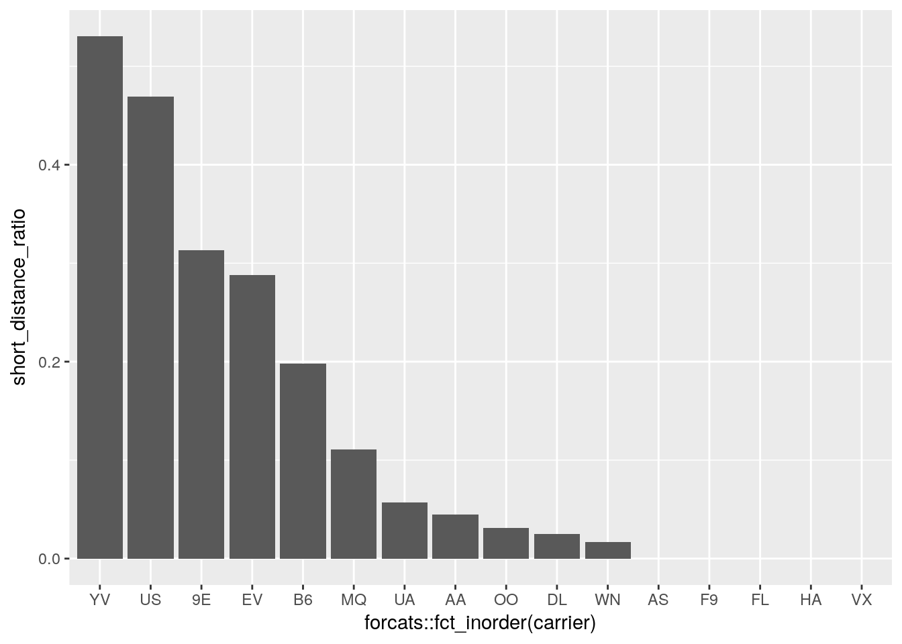

sum(), prod()mean(), median()sd(), IQR(), mad()min(), quantile(), max()n()sum() and mean() for logical variablesfirst(), last(), nth()Don’t forget na.rm = TRUE if needed!
flights %>%
summarize(mean(arr_delay, na.rm = TRUE))## # A tibble: 1 x 1
## `mean(arr_delay, na.rm = TRUE)`
## <dbl>
## 1 6.90flights %>%
summarize(mean(dep_delay, na.rm = TRUE))## # A tibble: 1 x 1
## `mean(dep_delay, na.rm = TRUE)`
## <dbl>
## 1 12.6flights %>%
summarize(
mean(arr_delay, na.rm = TRUE),
mean(dep_delay, na.rm = TRUE)
)## # A tibble: 1 x 2
## `mean(arr_delay, na.rm = TRUE)` `mean(dep_delay, na.rm = TRUE)`
## <dbl> <dbl>
## 1 6.90 12.6flights %>%
group_by(origin) %>%
summarize(
mean(arr_delay, na.rm = TRUE),
mean(dep_delay, na.rm = TRUE)
)## # A tibble: 3 x 3
## origin `mean(arr_delay, na.rm = TRUE)` `mean(dep_delay, na.rm = TRUE)`
## <chr> <dbl> <dbl>
## 1 EWR 9.11 15.1
## 2 JFK 5.55 12.1
## 3 LGA 5.78 10.3total_airtime_by_carrier <-
flights %>%
group_by(carrier) %>%
summarize(acc_air_time = sum(air_time, na.rm = TRUE)) %>%
ungroup()
total_airtime_by_carrier## # A tibble: 16 x 2
## carrier acc_air_time
## <chr> <dbl>
## 1 9E 1500801
## 2 AA 6032306
## 3 AS 230863
## 4 B6 8170975
## 5 DL 8277661
## 6 EV 4603614
## 7 F9 156357
## 8 FL 321132
## 9 HA 213096
## 10 MQ 2282880
## 11 OO 2421
## 12 UA 12237728
## 13 US 1756507
## 14 VX 1724104
## 15 WN 1780402
## 16 YV 35763total_airtime_by_carrier %>%
arrange(acc_air_time) %>%
mutate(carrier = forcats::fct_inorder(carrier)) %>%
ggplot() +
geom_col(aes(carrier, acc_air_time / 60 / 24 / 365)) +
coord_flip()
carrier_arranged_by_mean_distance <-
flights %>%
group_by(carrier) %>%
summarize(mean_distance = mean(distance)) %>%
ungroup() %>%
arrange(desc(mean_distance))
carrier_arranged_by_mean_distance## # A tibble: 16 x 2
## carrier mean_distance
## <chr> <dbl>
## 1 HA 4983
## 2 VX 2499
## 3 AS 2402
## 4 F9 1620
## 5 UA 1529
## 6 AA 1340
## 7 DL 1237
## 8 B6 1069
## 9 WN 996
## 10 FL 665
## 11 MQ 570
## 12 EV 563
## 13 US 553
## 14 9E 530
## 15 OO 501
## 16 YV 375carrier_arranged_by_mean_distance %>%
ggplot() +
geom_col(aes(x = forcats::fct_inorder(carrier), y = mean_distance))
flights %>%
filter(is.na(dep_time)) %>%
group_by(tailnum) %>%
summarize(not_departed = n()) %>%
ungroup() %>%
filter(!is.na(tailnum)) %>%
arrange(desc(not_departed))## # A tibble: 1,449 x 2
## tailnum not_departed
## <chr> <int>
## 1 N725MQ 29
## 2 N713MQ 28
## 3 N723MQ 27
## 4 N15574 26
## 5 N722MQ 26
## 6 N13949 24
## 7 N14573 24
## 8 N735MQ 24
## 9 N11535 23
## 10 N11565 23
## # ... with 1,439 more rowsflights %>%
group_by(tailnum) %>%
summarize(not_departed = sum(is.na(dep_time))) %>%
ungroup()## # A tibble: 4,044 x 2
## tailnum not_departed
## <chr> <int>
## 1 D942DN 0
## 2 N0EGMQ 17
## 3 N10156 7
## 4 N102UW 0
## 5 N103US 0
## 6 N104UW 0
## 7 N10575 17
## 8 N105UW 0
## 9 N107US 0
## 10 N108UW 0
## # ... with 4,034 more rowsflights %>%
filter(is.na(dep_time)) %>%
count(tailnum) %>%
arrange(desc(n))## # A tibble: 1,450 x 2
## tailnum n
## <chr> <int>
## 1 <NA> 2512
## 2 N725MQ 29
## 3 N713MQ 28
## 4 N723MQ 27
## 5 N15574 26
## 6 N722MQ 26
## 7 N13949 24
## 8 N14573 24
## 9 N735MQ 24
## 10 N11535 23
## # ... with 1,440 more rowsflights %>%
group_by(carrier) %>%
summarize(short_distance_ratio = mean(distance < 300)) %>%
ungroup() %>%
arrange(desc(short_distance_ratio)) %>%
ggplot() +
geom_col(aes(x = forcats::fct_inorder(carrier), y = short_distance_ratio))
Copyright © 2017 Kirill Müller. Licensed under CC BY-NC 4.0.